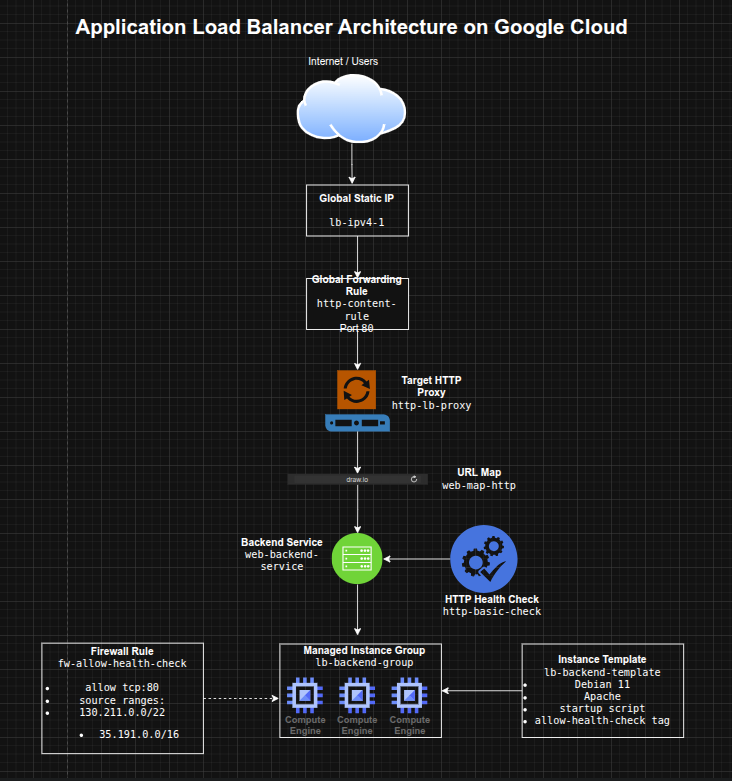

Configuring an Application Load Balancer on Google Cloud
Configuring an Application Load Balancer on Google Cloud
Timeline: December 2025
Role: Cloud Engineer
Skills: Google Cloud Load Balancing, Application Load Balancer, Compute Engine, Managed Instance Groups, Backend Services, URL Maps, Health Checks, Forwarding Rules, Instance Templates
Project Summary
This project focused on configuring a Layer 7 Application Load Balancer on Google Cloud to distribute HTTP traffic across Compute Engine web servers. The implementation involved provisioning Apache-based VM instances, creating an instance template and managed instance group, configuring firewall access for health checks, reserving a global static IP, and building the full Application Load Balancer stack using backend services, URL maps, a target HTTP proxy, and a forwarding rule.
The project demonstrated how Google Cloud’s Application Load Balancer can route traffic intelligently at the HTTP layer while using health-aware backend selection and globally distributed frontend infrastructure.
Objectives
- Configure the default region and zone for resources
- Create multiple web server instances
- Create an Application Load Balancer
- Configure backend infrastructure for HTTP traffic routing
- Test load-balanced traffic to backend instances
Architecture Overview
The architecture consisted of:
- Three standalone Compute Engine web server instances used for initial validation
- An instance template defining Apache-based backend VMs
- A managed instance group (
lb-backend-group) created from the template - A firewall rule allowing health checks from Google Cloud health check ranges
- A global static external IPv4 address
- An HTTP health check for backend validation
- A backend service linked to the managed instance group
- A URL map routing requests to the backend service
- A target HTTP proxy connected to the URL map
- A global forwarding rule exposing the Application Load Balancer on port 80

Implementation & Highlights
1. Region and Zone Configuration
- Set the default region and zone for Compute Engine resources
- Established a consistent deployment location for backend resources and testing :contentReference[oaicite:1]{index=1}
2. Creating Initial Web Server Instances
- Provisioned three Apache-based Compute Engine instances:
www1www2www3
- Used startup scripts to install Apache automatically
- Configured each instance to serve a unique landing page
- Applied a shared network tag and opened HTTP access with a firewall rule
- Verified direct HTTP connectivity to each instance before moving to load balancing :contentReference[oaicite:2]{index=2}
3. Building the Backend Template and Managed Instance Group
- Created an instance template named
lb-backend-template - Configured backend VMs with:
- Debian 11
- Apache
- startup script customization
- health-check firewall target tag
- Created a managed instance group named
lb-backend-groupwith two backend instances - Used a MIG to support more scalable and maintainable backend management than standalone instances :contentReference[oaicite:3]{index=3}
4. Preparing Health-Aware Access
- Created the
fw-allow-health-checkfirewall rule - Allowed traffic from Google Cloud health-check source ranges:
130.211.0.0/2235.191.0.0/16
- Scoped the rule with the
allow-health-checktag - Ensured the load balancer could verify backend health before routing traffic :contentReference[oaicite:4]{index=4}
5. Creating the Global Frontend
- Reserved a global static external IPv4 address named
lb-ipv4-1 - Used a global frontend to support HTTP traffic delivery through Google Front Ends (GFEs)
- Established a stable public entry point for the Application Load Balancer :contentReference[oaicite:5]{index=5}
6. Configuring the Application Load Balancer
- Created an HTTP health check (
http-basic-check) - Created a backend service (
web-backend-service) - Attached the managed instance group as the backend
- Created a URL map (
web-map-http) pointing to the backend service - Created a target HTTP proxy (
http-lb-proxy) - Created a global forwarding rule (
http-content-rule) on port 80 - Assembled the full Application Load Balancer request path from frontend to healthy backends :contentReference[oaicite:6]{index=6}
7. Testing Traffic Flow
- Verified backend VM health in the Load Balancing console
- Accessed the load balancer’s global IP through a browser
- Confirmed that traffic was served successfully by the backend instances in the managed instance group
- Validated that the load balancer routed traffic only after backends became healthy :contentReference[oaicite:7]{index=7}
Design Decisions
- Used managed instance groups instead of manually managed standalone instances for the load-balanced backend tier
- Used a global static IP to create a stable frontend endpoint
- Used HTTP health checks so traffic would be sent only to healthy backends
- Used backend services + URL maps + HTTP proxy to model modern Layer 7 application delivery on Google Cloud
- Used instance templates to make backend infrastructure repeatable and scalable
Results & Impact
- Successfully configured a Google Cloud Application Load Balancer
- Demonstrated practical use of:
- managed instance groups
- backend services
- URL maps
- target proxies
- forwarding rules
- health checks
- Built a strong understanding of the difference between:
- Layer 4 traffic distribution
- Layer 7 HTTP-aware application delivery
- Added a foundational project for more advanced traffic engineering and application delivery patterns
Tools & Technologies Used
- Google Compute Engine – Backend virtual machines
- Managed Instance Groups (MIGs) – Scalable backend groups
- Instance Templates – Repeatable VM definitions
- Google Cloud Application Load Balancer – L7 traffic distribution
- Backend Services – Health-aware backend routing
- URL Maps – HTTP request routing logic
- Target HTTP Proxy – Request handling layer
- Forwarding Rules – Frontend traffic steering
- Health Checks – Backend validation
Outcome
This project demonstrates the ability to configure a Google Cloud Layer 7 Application Load Balancer for HTTP traffic distribution across managed backend instances. It highlights practical skills in application delivery, health-aware routing, and scalable backend design, which are useful for cloud engineering, infrastructure, and traffic management roles.